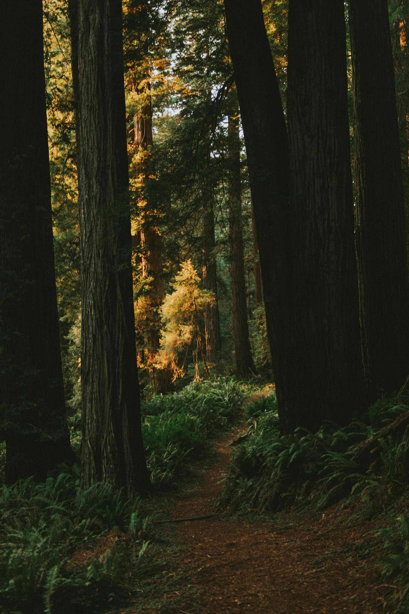
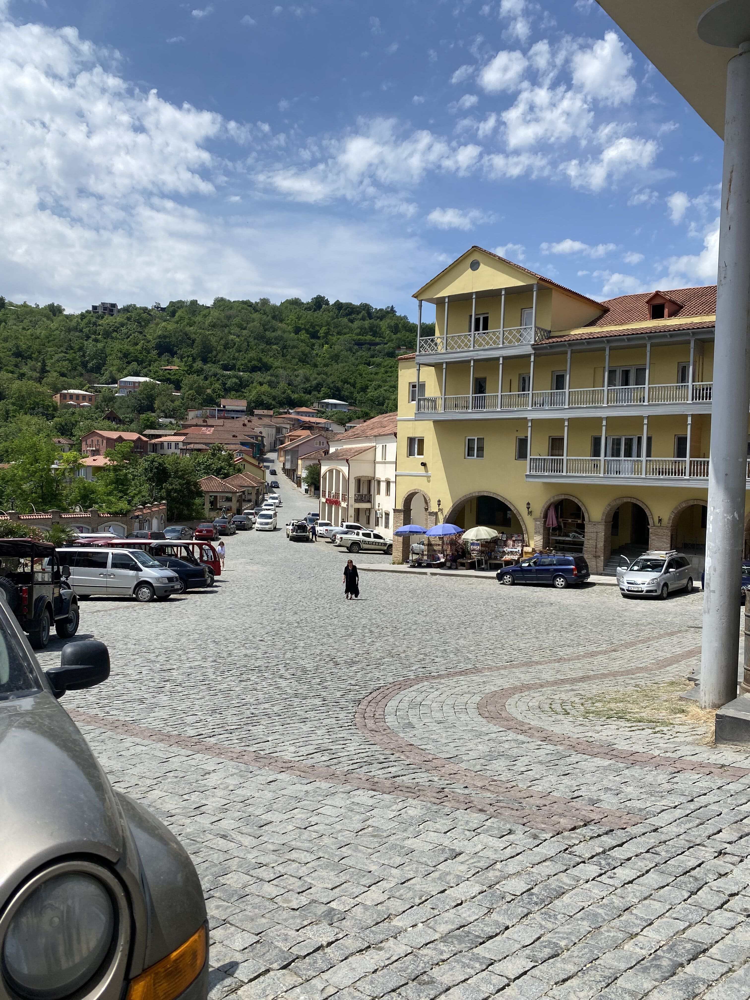
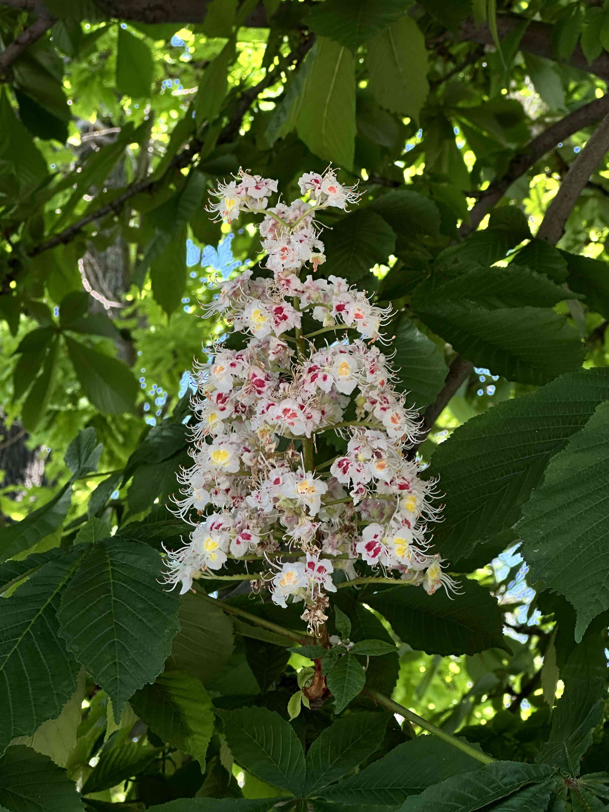
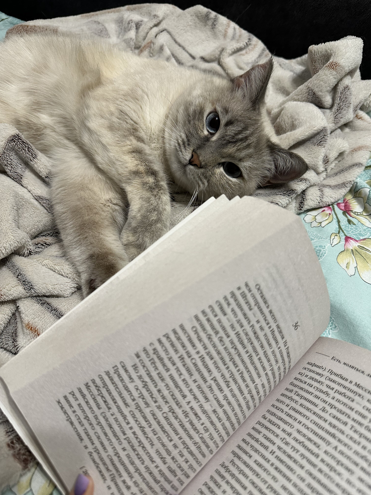
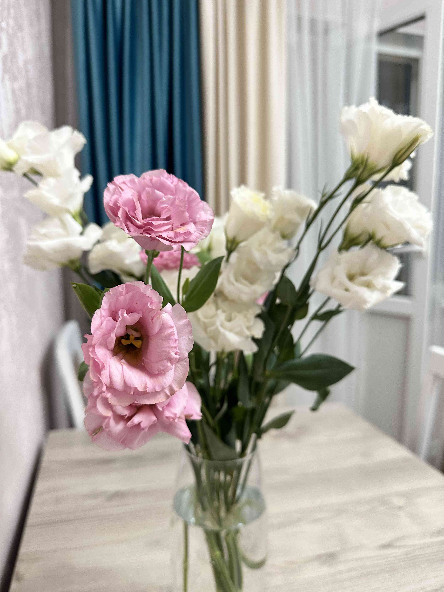
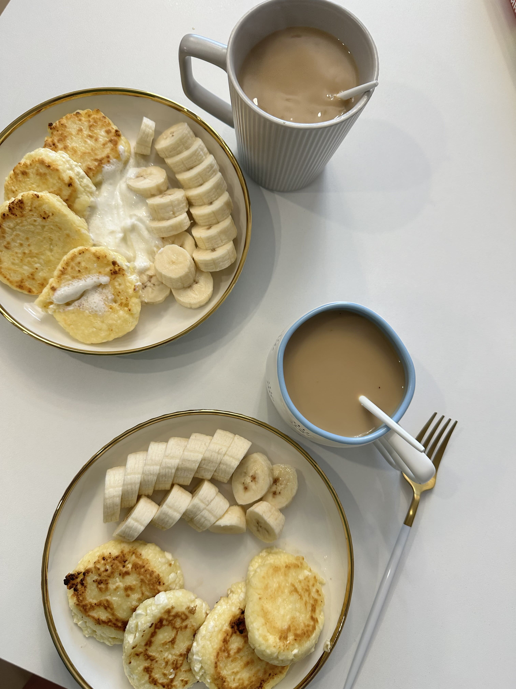

Фритрек и нулевой спринт: Подготовка к работе

</вдохновение>
1 спринт: Я — чистый лист

</страх>
1 спринт: А если не получится?
 </воодушевление>
</воодушевление>
2 спринт: Погоня за идеалом

</спокойствие>
2 спринт: О тех, кто рядом

</благодарность>
3 спринт: Обходные стратегии

</тупик>
3 спринт: Когда опускаются руки

</осознание>
«Сейчас я здесь»
</новые силы>